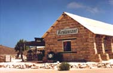
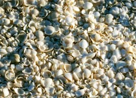
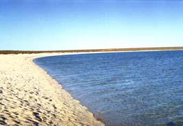
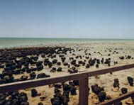

４０．「知らぬが仏の『真夏の高速連続走行』」その３（写真有り）
翌朝、起きたら観光客が多くあぜんとした。モンキーマイヤーはイルカが浜辺に寄ってくるので１０時頃まで待ったが
来なかった。仕方なく、シェルビーチかストロマトライト（生きた化石と言われる物で酸素を初めて生産した藻である。
この中は石になっているのである）を見に行きに車で出発する。モンキーマイヤーを出て直ぐに、野生のエミューが居た。
車を止めて一時観察する。出発と思いアクセルをふかし、時速９０ｋｍ／ｈｒ位に成ったときに、バタバタバタと音がす
る。スピードを落とすと音が小さくなる。再度スピードを上げると、バタバタバタとうるさい。車を止めて足回りを点検
すると、３本のタイヤがバースティングしている。タイヤが一皮むけているのである。一番ひどそうなタイヤだけ予備に
変えて隣町に行く。時速２０〜３０キロで進む。ポートヘドランドを出発するときに一応タイヤを点検していた。溝は確
実に５ｍｍ以上はあった。でも今は完全にすりきれてマイナス位になっていた。多分熱い（６０度以上？）道路を連続高速運転したので摩
耗が速かったのだろう。
このバースティングがガソリンスタンドとガソリンスタンドの間で起きたらとおもうとぞっとした。間隔は３００ＫＭ〜
５００ＫＭである。数百キロも時速２０〜３０キロで走ったら何時着くことやら、途中で完全にお手上げだろうし、救い
の車は高速走行していて３０分待つのだから、止まっていたら１時間待たなければならない。その間４０数度の炎天下で
クーラーも使えない、とんでもない事態が待っていたのである。
隣町でタイヤ交換を頼む、時間を聞いたらThree quarterという。今１１時である、一瞬３時１５分と思い何でそんなに
掛かるのと思ったら、４５分の意味であった。タイヤ４本取り替えて貰う。

その間食事することにした、動物的感覚で美味しそうなレストランを見つけ入ろうとしたが、家族全員反対する。理由は臭
いからである。エジプトの経験で大丈夫と思った。店はシェルビーチから取れた貝殻のブロックを使って作られている。中は
小綺麗にし裸電球がぶら下がっている。ギリシャ料理スバラーキを４人だが３つ頼む。出来上がるまで待っているが、やは
り異様な臭いがする。徐々にいい匂いがしてきて、おじさんがスバラーキを運んできて一口ずつ各人が食べた瞬間、全員顔
がほころんだ、美味しいのである。このスバラーキはスバラーシである、直ぐに追加注文をしてしまった。スバラーキはク
レープみたいな皮で野菜、牛肉ハムなどを円錐状に包んだもので我々が食べた物はマヨネーズ和えであったと思う。
|

シェルビーチに堆積している貝殻。
これが厚さ２０ｍ幅数十メートルで長さ百キロ以上続いている。
|
|

シェルビーチの海岸。真っ白で続いている。そして誰もいない海。我々家族だけだった、そのはず７時にここに訪れました。
|
|

シャークベイ半島の入り口、ハメリンプールにあるストロマトライトです。ＮＨＫ放送大学の研究施設が有るようです。
太古の昔にこのストロマトライトが地球上に酸素を供給してくれました。お陰で人類は今はびこって、
そして地球を破壊使用としています。
地球を大事にしましょう。
|
|